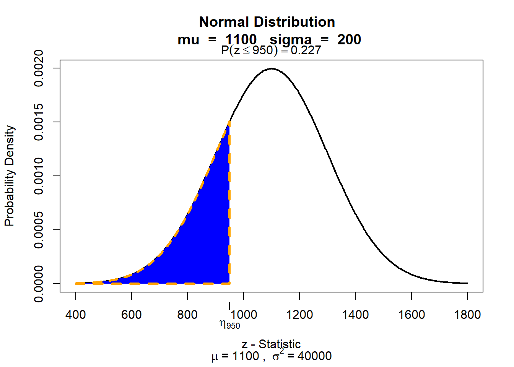
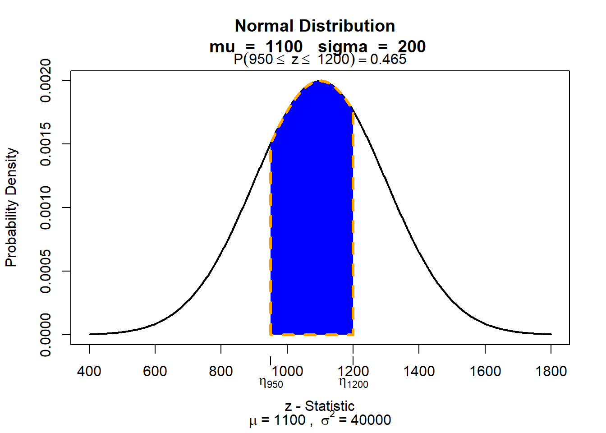

x <- seq(-10, 10, by = .1)
curve(dnorm(x, mean = 0, sd = 1), from=-4, to=4)11 Normal distribution
11.1 Normal distribution and z-scores
R has several built-in functions to generate the normal distribution. We can use these functions to demonstrate various aspects of probability distributions.
One of them is the dnorm() function. This function gives the height of the probability distribution at each point for a given mean and standard deviation. It allows us to specify a normal distribution using three elements:
- x is a vector of numbers.
- mean is the mean value.
- sd is the standard deviation.
To plot a standard normal distribution (mean = 0 and sd = 1), we need to write:
x <- seq(-10, 10, by = .1)-
This code creates a sequence of numbers between -10 and 10 incrementing by 0.1.
curve(dnorm(x, mean = 0, sd = 1), from=-4, to=4)-
This creates a normal distribution with a mean of 0 and a standard deviation of 1. We can set the boundaries manually from -4 to 4. If you change them the x-axis of the plot will get wider. However, for the standard normal distribution the range -4 to 4 is sufficient.
We can display different types of normal distributions. In the book, cumulative SAT scores are said to be approximately normally distributed with \(\mu\) = 1100 and \(\sigma\) = 200.
To plot the normal distribution of SAT scores (mean = 1100 and sd = 200), we need to write:
x <- seq(-10, 10, by = .1)
curve(dnorm(x, mean = 1100, sd = 200), from=200, to=2000)x <- seq(-10, 10, by = .1)-
This code creates a sequence of numbers between -10 and 10 incrementing by 0.1.
curve(dnorm(x, mean = 1100, sd = 200), from=200, to=2000)-
This creates a normal distribution with a mean of 1100 and a standard deviation of 200. We can set the boundaries manually from 200 to 2000 to make the normal distribution fit.
11.1.1 Calculating z-scores
The z-score is a measure that shows how far below or above of the mean a specific value in a given data set is. The formula for the z-score is:
z = \(\frac{x-\mu}\sigma\)
We use the example of cumulative SAT scores (\(\mu\) = 1100 and \(\sigma\) = 200) to illustrate the calculation of z-scores. To calculate the z-score of a value of 1190, we would calculate:
z = \(\frac{x-\mu}\sigma\) = \(\frac{1190-1100}{200}\)
(1190-1100)/200[1] 0.45This indicate that z score is positive (0.45) and indicates that it is 0.45 standard deviations above the average.
To find the area in a standard normal (z) distribution, we can use the pnorm() function. Watch out though: It always gives the area, or probability, below a specific z-value (or, if you want, of the left tail):
pnorm(0.45)[1] 0.6736448The value therefore, indicates that 67.36 % of the values are below a z-value of 0.45. So if we would be interested in knowing the area above a z-score of 0.45 then we would need to compute 1 - 0.6736448 = 0.3263552. Therefore, approximately 32.65 % of values are above an SAT score of 1190. If we need to calculate the area below a z-value, the pnorm() function displays the correct value.
We can also calculate the area between two z-scores. If, for example, we are interested in the area between SAT scores of 950 and 1200, we would calculate two z-scores.
(950-1100)/200[1] -0.75(1200-1100)/200[1] 0.5The z-score of an SAT score of 950 is - 0.75, the z-score of an SAT score of 1200 is 0.5. The area, or the probability, below these specific z-values (or, if you want, of the left tail) are:
pnorm(-0.75)[1] 0.2266274pnorm(0.5)[1] 0.6914625Remember that both indicate the size of the area to the left. Therefore, to find the area under the curve between the two SAT scores we can subtract the smaller value (corresponding to an SAT score of 950) from the larger value. This gives us:
pnorm(0.5) - pnorm(-0.75)[1] 0.4648351Note that we can simply write pnorm(0.5) - pnorm(-0.75) and R will subtract the value of pnorm(-0.75) (which is 0.2266274) from pnorm(0.5) (which is 0.6914625)
You can also calculate quantities directly without having to calculate the z-values first. The pnorm() function allows us to immediately specify the value we are looking for, as well as the mean and standard deviation of our normal distribution:
pnorm(950, mean = 1100, sd = 200)[1] 0.2266274pnorm(1200, mean = 1100, sd = 200)[1] 0.691462511.1.2 Find the boundary value that determines an area
Of course, it is also possible to do the reverse operation, i.e. if we are interested what SAT score is required to belong to the 10% best scores. For this, we use the function qnorm(). This function comes standard with R and is used to find the boundary value that determines an area. For example, suppose you want to find that 90th percentile of a normal distribution whose mean is 1100 and whose standard deviation is 200. To do this, we write:
qnorm(0.9, mean = 1100, sd = 200)[1] 1356.31qnorm(0.9, mean = 1100, sd = 200)-
This code calculates the point under the curve for which 90% of students in a population that is normally distributed with mean 1100 and standard deviation 200 will lie below. You can change the values depending on the situation. If you wish to calculate the 45th percentile of a normal distribution, then write
qnorm(0.45, , mean = 1100, sd = 200),
11.1.3 Display the area under the curve using the visualize package
Alternatively, we can use the visualize package to graph probability distributions. This package is very convenient because it allows us to also highlight the area or probability in user defined locations. In other words, you can use it to indicate the ‘area under the curve’ that you are looking for quite easily and it calculates the size of the area for you. The package is able to provide lower tail, bounded, upper tail, and two tail calculations.
library(visualize)Suppose we want to plot the area under the curve below SAT scores of 950 in a normal distribution of SAT scores (mean = 1100 and sd = 200), we need to write:
visualize.norm(stat = 950,
mu = 1100,
sd = 200,
section = "lower")
visualize.norm(stat = 950,-
visualize.norm()generates a plot of the Normal distribution with user specified parameters. We first specify the value that limits our area (in this example an SAT score of 950). mu = 1100,-
This specifies the mean of the normal distribution.
sd = 200,-
This specifies the standard deviation of the normal distribution.
section = "lower")-
Here you select what section you want to be displayed. You can also use “upper” if you want the area on the ‘right’ side under the curve.
To plot the area under the curve between SAT scores of 950 and 1200 in a normal distribution of SAT scores (mean = 1100 and sd = 200), we need to write:
visualize.norm(stat = c(950, 1200),
mu = 1100,
sd = 200,
section = "bounded")
visualize.norm(stat = c(950, 1200),-
visualize.norm()generates a plot of the Normal distribution with user specified parameters. We now have two limits and therefore the parameter asstat = c(lower_bound, upper_bound). mu = 1100,-
This specifies the mean of the normal distribution.
sd = 200,-
This specifies the standard deviation of the normal distribution.
section = "bounded")-
Here you select what section you want to be displayed. Because we are interested in the area between the two values in
stat, we need to usebounded.